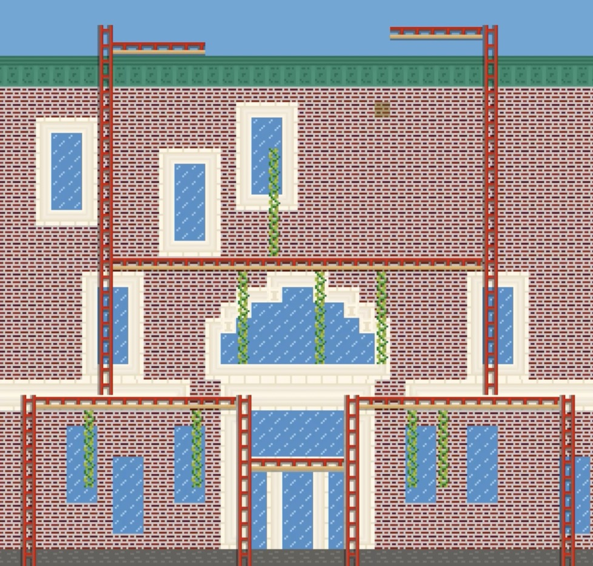
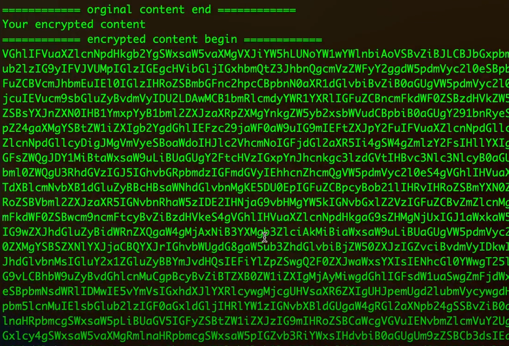

|
Chen-Wei Chou I am a James Scholar Honors student at the University of Illinois Urbana-Champaign (UIUC), majoring in Pure Mathematics with a minor in Computer Science. My academic journey began in Santa Barbara, CA, where I developed a strong foundation that led to my transfer to UIUC. This journey is fueled by a passion for education, mathematics, systems and networking, especially cloud computing and distributed systems. I have extensive research experience in both Mathematics and Computer Science. In Mathematics, I have studied the Aztec diamond in combinatorial mathematics under Ph.D. mentor Trung Vu (GC259). Additionally, I conducted undergraduate research in math on Education and Developing Inclusive Outreach Materials under the director of the Illinois Mathematics Lab, Prof. Karen Mortensen, with PhD mentors Ada Stelzer and Grace McCourt (MATH 492). In Computer Science, my work focuses on cloud computing and distributed systems. I have been guided by esteemed professors such as (cloud computing area) Prof. Sibin Mohan with Ph.D. mentor Ashish Kashinath (CS397) and (distributed systems area) Prof. Indranil Gupta with Ph.D. mentor Shashwat Jaiswal (CS425). |
 |
Projects |
|
|
Improvement of Cluster System in Docker
CS397 Individual Study @ UIUC, 2024 spring code This research project at UIUC focused on improving the Cluster System using Docker. My goal was to improve the CS341H project and transform it for the Docker platform. While the CS341H project was applied to physical and virtual machines on Linux OS, this research project ran on Docker containers. |
|
|
Cluster system power management via network
CS341H System Programming @ UIUC, 2024 spring code / demo This is a semester-long honor project at UIUC, where I developed a client-server architecture to manage computing node health. My goal was to create a management tool that ensures high availability of network services for a mission-critical research platform and enterprise environment by deploying and managing clusters in a data center. I utilized a reboot mechanism to restore the healthy status of cluster nodes and adopted the heartbeat approach to determine if nodes are healthy or dead. |
|

|
Spimbot: A bot engineered to play for fun
CS233 Computer Architecture @ UIUC, 2023 fall code This is the final project, aka Lab 14, at UIUC. We developed an almost 1,000-line MIPS Assembly code program to skillfully manipulate bots that move precisely, solve puzzles, and clean tiles. The code involved meticulous path planning to ensure the bots followed our designated paths accurately. The bot we developed demonstrated better locomotion capabilities, including jumping, running, and moving slowly in specific map areas. We excelled in the competition, achieving a high score. |
|
|
Weekly honor projects
CS225H Data Structures Honors @ UIUC, 2023 spring code These are my weekly honor projects at UIUC. I implemented advanced data structures, including Negligent Naive Search, Zany Z Values, Zealous Z Algorithm, Brilliant Boyer-Moore, Novel N-ary Trees, Shiny Suffix Trees, Savage Suffix Arrays, Boisterous Burrows-Wheeler, Fabulous FM Index, Precise Pigeonhole Principle, and Exquisite Edit Distances. I achieved a perfect score for all weekly project requirements. |
|

|
Secure File
CS128H Introduction to Computer Science II Honors @ UIUC, 2022 fall code / demo This is the honors project at UIUC. We developed a secure tool that requires a keyfile with the correct number to successfully access and verify file content. Implemented in Rust, our secure tool offers text encoding and decoding using a keyfile. For more information, please refer to the RUN.md file in the repository. |
Teaching and ServiceTeaching Assistant, CS 140 Object-Oriented Programming Using C++ @ SBCC, 2021spring |
Honor and AwardsJames Scholar Honors Program, 2022, 2023 First place, the International Collegiate Programming Contest at SoCal (ICPC) |
Misc.I am interested in education and computer systems. Before studying abroad in the United States, I was a Red Hat Certified Architect in Infrastructure (RHCA). I provided training and consulting services in Taiwan. My Certification ID: 130-230-063. |
|
Page template borrowed from Jon Barron |